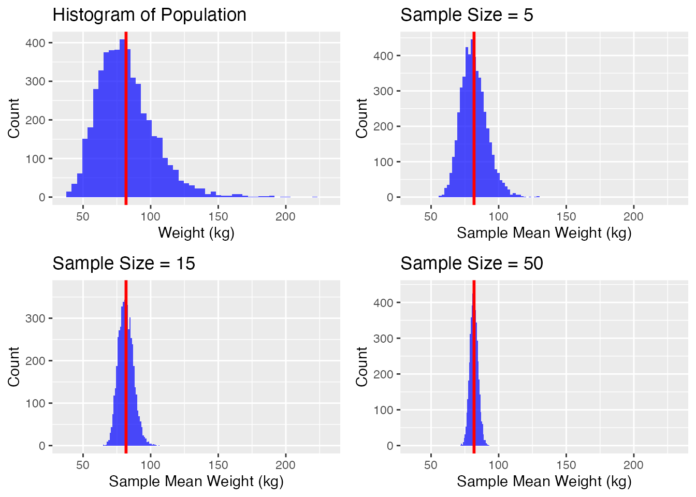
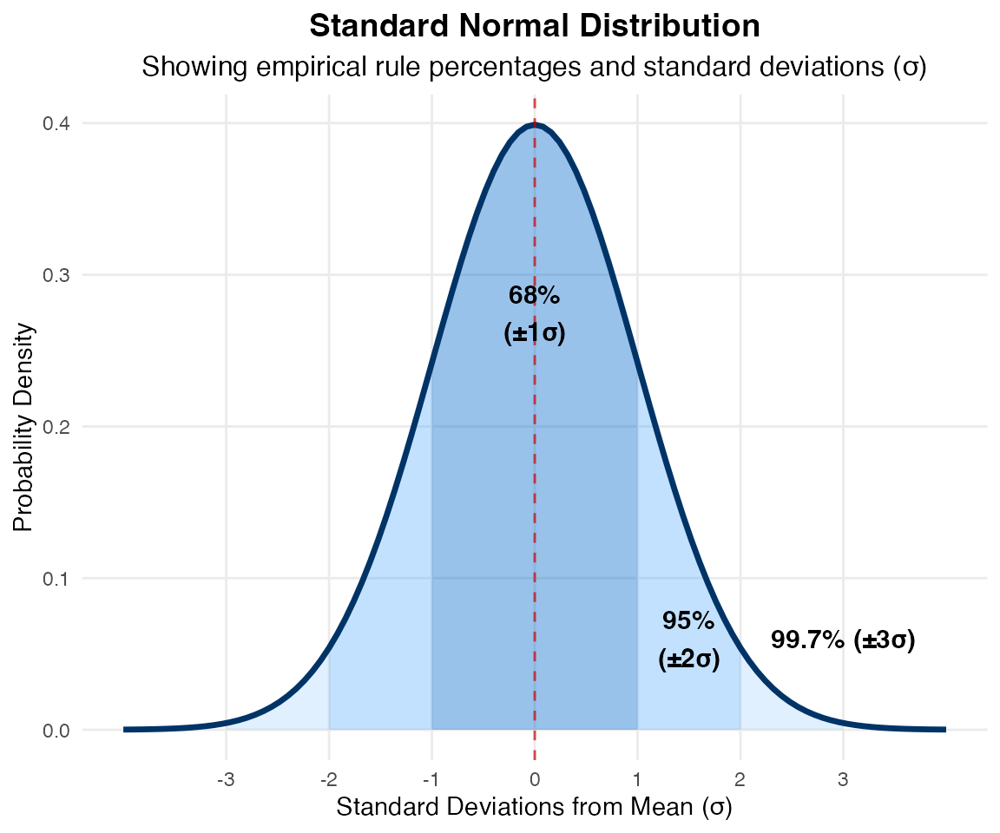
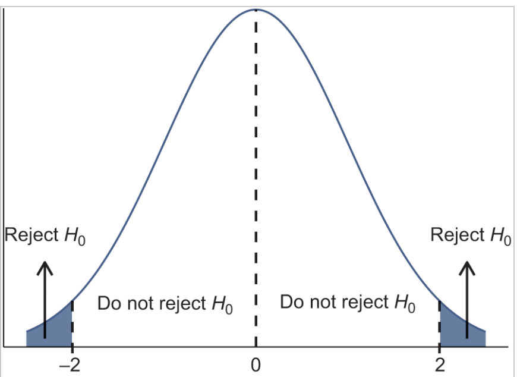
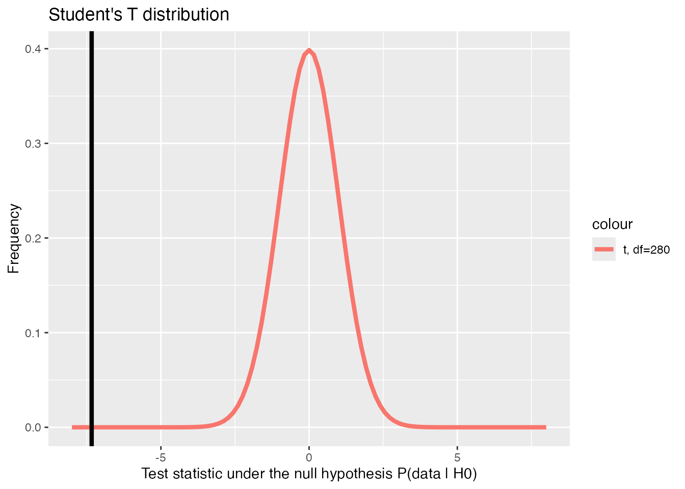
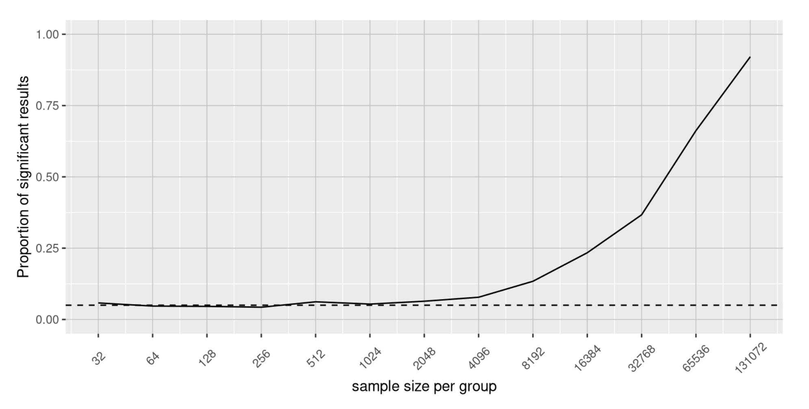

Today, we’ll discuss the use of statistics to make decisions – in particular, decisions about whether a particular hypothesis is supported by the data. There are three major goals of statistics:
Describe
Decide
Predict
We’ll cover:
Statistical inference - Using a sample to generalize (or infer) about the population.
Sampling distributions and standard error - What does it actually mean to analyse a sample?
Confidence interval - How certain are we about our estimate?
Hypothesis Testing - How do we use data to answer a hypothesis and make a decision?
Learning Objectives
Understand point estimation
Apply and interpret the Central Limit Theorem
Construct and interpret confidence intervals for means
Understand the behaviour of confidence intervals
Carry out hypothesis tests for means (t-test)
Understand the probabilities of error in hypypothesis tests
If you want to figure out the distribution of the change people carry in their pockets, and your sample is large enough, you will find that the distribution follows certain patterns.
Statistical Inference
Adapted from:
Significant Statistics, Chapter 6 - Foundations of Inference. John Morgan Russell (2020).
Statistical Thinking, Chapter 9 - Hypothesis Testing. Russell A. Poldrack (2019).
Statistical Inference
The goal of statistical inference is to generalise - to make statements about a population based on a sample.
Statistical inference uses what we know about probability to make our best “guesses” from samples about what we don’t know about the population.
Statistical Inference
Main forms of statistical inference
Point estimation
Using sample data to calculate a single statistic as an estimate of an unknown population parameter
Example: What is the average height of undergraduates at this university? What is the average construction cost of an office building in London? What was it in 2019?
Confidence intervals
An interval built around a point estimate for an unknown population parameter.
Hypothesis testing
A decision making procedure for determining whether sample evidence supports a hypothesis.
Point Estimation
The most natural way to estimate features of the population (parameters) is to use the corresponding summary statistic calculated from the sample. Some common point estimates and their corresponding parameters are found in the following table:
Parameters and Point Estimates
Parameter
Measure
Statistic
\mu
Mean of a single population
\bar{x}
p
Proportion of a single population
\hat{p}
\mu_D
Mean difference of two dependent populations
\bar{x}_D
\mu_1 - \mu_2
Difference in means of two independent populations
\bar{x}_1 - \bar{x}_2
p_1 - p_2
Difference in proportions of two population
\hat{p}_1 - \hat{p}_2
\sigma^2
Variance of a single population
S^2
\sigma
Standard deviation of a single population
S
Point Estimation
Parameters and Point Estimates
Parameter
Statistic
\mu
\bar{x}
p
\hat{p}
\mu_1 - \mu_2
\bar{x}_1 - \bar{x}_2
p_1 - p_2
\hat{p}_1 - \hat{p}_2
\sigma^2
S^2
\sigma
S
Suppose the mean weight of a sample of 60 adults is 173.3 lbs; this sample mean is a point estimate of the population mean weight, \mu.
Remember: this is one of many samples that we could have taken from the population.
If a different random sample of 60 individuals were taken from the same population, the new sample mean would likely be different as a result of sampling variability. While estimates generally vary from one sample to another, the population mean is a fixed value.
Unbiased Estimation
What makes a statistical estimate of this parameter of interest a “Good” one? It must be both accurate and precise.
Although variability in samples is present, there remains a fixed value for any population parameter.
According to the law of large numbers, probabilities converge to what we expect over time.
Point estimates follow this rule, becoming more accurate with increasing sample size.
Example Dataset - NHANES
National Health and Nutrition Examination Survey (NHANES) from the US Centers for Disease Control (CDC)
Connecting sampling distributions with Standard Error, Confidence Intervals, and Hypothesis Testing
Central Limit Theorem
The CLT means says that if you keep drawing larger and larger samples and calculating their means, the sample means form their own normal distribution (the sampling distribution).
The sampling distribution of the mean is generated by repeated sampling from the same population and recording the sample mean per sample. This forms a distribution of different means, and this distribution has its own mean and variance.
The normal distribution has the same mean as the original distribution and a variance that equals the original variance divided by the sample size.
Drawing samples of people’s weight from the NHANES dataset.

We are drawing a random sample of people from the dataset and calculating the mean weight for that sample. Sample size is the number of data points we pull. We then repeat this 5000 times (n_samples) to build up the sampling distribution.
Standard Error
A sampling distribution is what we get by simulating multiple samples (of sample size n) from a population.
Recall: The Standard Error is the standard deviation of the sampling distribution.
SEM = \sigma_{\bar{x}\ (means)}
Standard Error
A sampling distribution is a probability distribution of a statistic at a given sample size.
Recall: The Standard Error is the standard deviation of the sampling distribution. This is also equal to the standard deviation \sigma of the population divided by the square root of the sample size.
SEM = \sigma_{\bar{x}\ (means)} = \frac{\sigma}{\sqrt{n}} \approx \frac{\sigma_{x}}{\sqrt{n}} \left[ i.e. \frac{\text{Est. Std Dev of the sample}}{\sqrt{\text{Sample size}}} \right]
In other words:
If you draw random samples of size n, the distribution of the random variable \bar{X}, which consists of sample means, is called the sampling distribution of the sample mean. The sampling distribution of the mean approaches a normal distribution as n, the sample size, increases.
Standard Error
Key Takeaways
A sampling distribution is what we get by simulating multiple samples from a population.
The Standard Error is the standard deviation \sigma_{\bar{x}} of the sampling distribution.
The SE decreases as the sample size n increases.
Because of this relationship - we can estimate the SE from a single sample \frac{\sigma_x}{\sqrt{n}}
SEM = \sigma_{\bar{x}\ (means)} = \frac{\sigma}{\sqrt{n}} \approx \frac{\sigma_{x}}{\sqrt{n}} \left[ i.e. \frac{\text{Est. Std Dev of the sample}}{\sqrt{\text{Sample size}}} \right]
The “AI-Powered Job Market Insights” dataset provides a snapshot of the modern job market, particularly focusing on the role of artificial intelligence (AI) and automation across various industries.
This dataset includes 500 unique job listings, each characterized by different factors like industry, company size, AI adoption level, automation risk, required skills, and job growth projections.
To begin, split into three groups. Decide on the following roles, one per person:
Sampler - draws samples from the population
Recording - records the draws in R
Your group has been presented with a population model (bag containing salaries). There may be multiple populations represented in the various bags around the room.
Please DO NOT look in the bag OR empty the contents of the bag.
Exercise - Mystery bags {nonincremental}
The task
The Sampler draws 10 slips from the bag - this is your sample of size 5.
The Recorder records the values on the slips into the sampling-exercise.R file.
Create a new list for each sample (sample_1 <- c(1, 2, 3, 2, 2))
Calculate the mean for the new sample and add it to the sample_means table.
Run the code to plot the histogram of your samples.
Return the slips to the bag.
Ensure the data is well mixed between samples.
Repeat
Statistical Inference
Statistical Inference
Using a sample to generalize (or infer) about the population.
We know how to make a point estimate of a population - what else do we need in order to make a decision?
How confident are we that our estimate can generalize to the rest of the population?
We need to determine the uncertainty in our estimate
Confidence Intervals
A confidence interval is another type of estimate, but instead of being just one number, it is an interval of numbers
Provides a range a range of reasonable values where we expect the true population parameter to fall.
Point estimate (statistic) has some variability and uncertainty since we estimate it based on a sample.
We want to quantify and communicate this uncertainty.
Business Example
Average streams per month
You work in the marketing department of a music company. You want to know the mean number of songs a consumer streams per month.
You conduct a survey of 100 customers and calculate the sample mean (\bar{x}) and use it as the point estimate for the population mean (\mu)
Suppose we know that the standard deviation \sigma = 100.
Following the Central Limit Theorem, the Standard Error is:
What is the probability of sampling a certain mean value?

The Empirical Rule says that in approximately 95% of the samples, the sample mean, \bar{x}, will be within two standard deviations of the population mean\mu .
For our example, two standard deviations is (2)(10) = 20. The sample mean \bar{x} is likely to be within 20 units of \mu.
Because \bar{x} is within 20 units of \mu, which is unknown, then \mu is likely to be within 20 units of \bar{x}in 95% of the samples.
Calculate the Confidence Interval
We want to calculate the range of values which the true mean is likely to fall within 95% of the time, given our sample.
For the streaming example, suppose that a sample produced a sample mean \bar{x} = 200. Then the unknown population mean \mu is between \bar{x}-20=200-20=180 and \bar{x}+20=200+20=220 songs per month.
We can say that we are about 95% confident that the unknown population mean number of songs streamed per month is between 180 and 220. The approximate 95% confidence interval is (1.8, 2.2).
Based on our sample, we can say two things. Either:
The interval (180, 220) contains the true mean \mu, or…
Our sample prodcued an \bar{x} that is not within 20 units of the true mean \mu. This would only happen for 5% of the samples.
Communicating Confidence Intervals
The interpretation should clearly state the confidence level (CL), explain what population parameter is being estimated (here the population mean), and state the confidence interval (both endpoints).
“We can be _______ % confident that the interval we created, _______ to ________ captures the true population mean (include the context of the problem and appropriate units).”
We state the range within which our evidence indicates contains the population mean.
Exercise
Calculate the confidence interval for your sample.
The “AI-Powered Job Market Insights” dataset provides a snapshot of the modern job market, particularly focusing on the role of artificial intelligence (AI) and automation across various industries.
This dataset includes 500 unique job listings, each characterized by different factors like industry, company size, AI adoption level, automation risk, required skills, and job growth projections.
You have been tasked with examining the impact of AI skills and company AI adoption on the job market across the world. Think about what we might want to know about this sector.
What might some be some interesting questions we could ask based on this data?
How would we answer them? How would we know whether our answer is generalizable?
The Logic of Testing Hypotheses
A hypothesis is a statement about a population, or general pattern.
Testing a hypothesis amounts to gathering information (sampling) from a dataset and, based on that information, deciding whether that hypothesis is false or true in the population.
Two decisions are possible:
Rejecting the hypothesis (if there is enough evidence against it)
Not rejecting it (if there is not enough evidence against it)
Rejecting a hypothesis is a more conclusive decision than not rejecting it.
Steps of Analysis & Hypothesis Testing
1. Formulate research question
2. Specify hypotheses
What statistic is appropriate to answer our question?
Null and Alternative Hypotheses
3. Collect relevant data
What information is needed to answer our question?
What is our population? How do we sample from the population in a statistically valid way?
4. Compute test statistic
Fit appropriate model
Calculate test statistic
Account for variability
5. Determine probability under the null hypothesis
6. Assess significance and meaningfulness
1. Formulate research question
This is where all analysis or research starts - what is it you want to know, and what will you do with that information?
For our AI Jobs dataset some research questions we might ask are:
Which jobs are the highest paid?
Which industries have seen the most AI adoption?
Are lower paid jobs at more risk of being automated?
2. Specify hypotheses
Now we translate our general research questions into specific and testable hypotheses.
The actual test begins by considering two hypotheses. They are called the null hypothesis and the alternative hypothesis. These hypotheses contain opposing viewpoints.
The null hypothesis (H_0) : It is often a statement of the accepted historical value or norm. This is your starting point that you must assume from the beginning in order to show an effect exists.
The alternative hypothesis (H_a) : It is a claim about the population that is contradictory to H_0 and what we conclude when we reject H_0
2. Specify Hypotheses
After you have determined which hypothesis the sample supports, you make a decision.
There are two options for a decision:
“reject H_0” if the sample information favors the alternative hypothesis, or
“do not reject H_0” or “decline to reject H_0” if the sample information is insufficient to reject the null hypothesis.
Mathematical symbols used in H0 and Ha:
Figure 6.12: Null and Alternative Hypotheses
H_0
H_a
equal (=)
not equal (\neq) or greater than (>) or less than (<)
greater than or equal to (\geq)
less than (<)
less than or equal to (\leq)
more than (>)
2. Specify Hypotheses
Decide on statistic of interest
Decide what statistic is appropriate to answer our question. What do we need to calculate from our sample?
Difference in mean(salary_usd) for each level of automation_risk
Since there are three automation risk levels (Low, Medium, High), the comparison we could make are:
s = \overline{salary}_{\text{high risk}} - \overline{salary}_{\text{low risk}}
s is our statistic of interest. We are interested in the true value of s in the population (s_{true}).
What we can actually calculate is \hat{s} the value of s in our sample.
2. Specify Hypotheses
Express the hypotheses mathematically
Our hypothesis, plainly stated, is:
There is a relationship between job salary and the likelihood of automation. Expressed another way, the average salary of high risk jobs is different from that of low risk jobs.
What are the Null Hypothesis H_0 and Alternative Hypothesis H_A ?
2. Specify Hypotheses
Express the hypotheses mathematically
Null Hypothesis H_0
There is no difference in the average salary between those jobs at high risk of automation, and those at low risk:
H_0: s_{true} = 0
Alternative Hypothesis H_a
The difference in the average salary of high risk jobs and low risk jobs is not zero:
H_A: s_{true} \neq 0
3. Using the Sample to Test the Null Hypothesis
Once you have defined your hypotheses the next step in the process, is to collect sample data.
In this case, we already have the data in ai_jobs. Before moving on to actually testing the hypothesis, let’s take the naive approach - just calculate \hat{s} the difference between the two groups.
There are several statistical tests used in Hypothesis Testing. Which one you use depends on what type of hypothesis you are testing and what kind of data you have.
For this example, where we are testing the difference in means of a numerical variable (salary_usd) across different groups (automation_risk), we use a test called the t-test.
4. Compute the test statistic
Following the logic of hypothesis testing, we start from the assumption that the null (H_0) is true and thus s_{true} = 0.
We look at the evidence to see if we want to reject this null or maintain our assumption that it’s true.
The evidence we look for is how far the estimated value \hat{s} is from zero.
We reject H_0 if the distance is large (i.e. \hat{s} is sufficiently greater or lesser than 0)
How far is far enough?
The test statistic is the measure of how far the estimated value \hat{s} is from what its true value would be if H_0 is true.
4. Compute the test statistic
t-statistic:
t = \frac{\hat{s}}{\mathrm{SE}(\hat{s})} = \frac{\bar{x}_A - \bar{x}_B}{\mathrm{SE}(\bar{x}_A - \bar{x}_B)}
The t-test is a procedure to decide whether we can reject the null H_0.
The magnitude of the t-statistic t measures the distance of \hat{s} from what s_{true} would be if the null were true.
The unit of distance is the standard error.
The t-statistic transforms the original statistic of interest into a standardized version
For example: if t = 1 (or -1), it means \hat{s} is exactly one standard error away from zero.
4. Compute the test statistic
R makes it very easy to apply a test such as the t-test. For most statistical tests, there exists a simple function to compute it.
The following step is making a decision: either rejecting the null or not rejecting it.
In hypothesis testing, this decision is based on a clear rule specified in advance.
We specify in advance to avoid bias - before looking at the data, we state what it would take to reject the null hypothesis. We follow what the data says, whatever result that may be.
Once you have your test statistic there are two methods to use it to make your decision:
Critical value method
P-Value method – This is the preferred method we mostly will focus on.
Critical Values
We use a critical value to tell us whether the test statistic is large enough - is it far enough away from zero to reject the null?
To define the critical value, we need to decide how conservative we want to be with the evidence.
The larger we set the critical value, the harder it is to reject the null hypothesis.
Critical Values
The test sampling distribution
As with the sampling distribution for means we looked at earlier, our test-statistic t also has a sampling distribution. If we were to sample many times and calculate t for each sample, we would again get a distribution with a specific shape and parameters.

The sampling distribution of the test statistic when the null is true.
Recall: Approximately 95% of values fall within two standard deviations of the distribution.
Critical Values
Picking a critical value
The sampling distribution of the test statistic when the null is true.
Recall: Approximately 95% of values fall within two standard deviations of the distribution.
Since 95% of values fall within 2 SD, if we want to reject the null hypothesis with 95% confidence, then we say that our test statistic must fall outside of 2 SD.
In other words, since the units of \hat{s} are standard deviations: \hat{s} \geq \pm 2
Critical Values
A critical value of 2 is standard. However, it is ultimately just a convention. We could choose to set other critical values that correspond to different probabilities. There is not anything inherently special about setting our threshold at 95% vs 90%.
If we make the critical value \pm 1.6, the chance of a false positive is 10%.
Different fields have different standards for evidence - for instance, a critical value of 5 (99.994%) is standard in particle physics (referred to as 5\sigma).
Interpret our results
Since our test statistic t = -7.5 < -2, at a confidence level of 95%, we would have sufficient evidence to reject H_0
Therefore, we would say:
The average salary of jobs at high risk of automation is not the same as the average salary of jobs at low risk.
We have evidence that higher salary jobs are at less risk of automation than low salary jobs.
Interpret our results
Important!
This does not inherently mean we accept the alternative hypothesis. We are narrowing the realm of possible answers, but very rarely (perhaps never) are we able to statistically prove a single explanation in one go.
We have increased our reasons to believe our hypothesis, but several other possibilities exist.
Science is then the process of continually investigating our hypothesis and pitting it against new null hypotheses and rejecting them as well.
P-Value Method
Hopefully, the critical value is fairly intuitive to you now. However, it is not the typical way that statistical results are presented.
Instead, you will typically see something called a p-value.
p-value: The probability than an event will occur, assuming the null hypothesis is true.
The p-value essentially flips the critical value statement:
Instead of saying a test statistic value > 2 falls outside the 95% bound, we calculate where out test statistic falls in the distribution
The p-value is the probability that the test statistic will be as large, or larger, than we calculate from the data, if the null hypothesis is true. i.e. P(data | H_0).
P-value
p = P(|t| > \text{critical value})
Because the p-value tells us the smallest level of significance at which we can reject the null hypothesis, it summarizes all the information we need to make the decision.
This is why the p-value is used - rather than needing to set a critical value and calculate the test statistic, we can instead use just the p-value.
Interpreting the P-value
Like with the critical value, we should set our desired significance level before carrying out the analysis.
We then compare our calculated p-value with the significance level. If it is less, we reject the null hypothesis.
The significance level (\alpha) is the probability that a true null hypothesis will be rejected.
A typical significance level is \alpha < 0.05, which corresponds with a critical value of 2, or a probability of 5%.
Welch Two Sample t-test
data: ai_jobs_high$salary_usd and ai_jobs_low$salary_usd
t = -7.3358, df = 302.91, p-value = 2.031e-12
alternative hypothesis: true difference in means is not equal to 0
95 percent confidence interval:
-25596.33 -14768.53
sample estimates:
mean of x mean of y
79966.86 100149.29
If our p-value is smaller than our pre-set significance level (\alpha), we reject the null hypothesis and can say the result is “statistically significant” at p < 0.05.
xpos <-seq(-5, 5, by =0.01)degree <-280ypos <-dt(xpos, df = degree)ggplot() +xlim(-8, 8) +geom_function(aes(colour ="t, df=280"), fun = dt, args =list(df =280), linewidth =1.5) +geom_vline(xintercept = t_res$statistic, color ="black", linewidth =1.5) +xlab("Test statistic under the null hypothesis P(data | H0)") +ylab("Frequency") +ggtitle("Student's T distribution")

Decision and conclusion
The preset \alpha is the probability of a False Positive error (called a Type I error) - rejecting the null hypothesis when the null hypothesis is true.
Back to our two possible decisions:
If \alpha > \text{p-value}, reject H_0.
The results of the sample are statistically significant.
We can say there is sufficient evidence to conclude that H_0 is an incorrect believe and that the alternative hypothesis, H_Amay be correct.
If \alpha < \text{p-value}, fail to reject H_0.
The results of the sample are not significant. There is not sufficient evidence to conclude that the alternative hypothesis H_A may be correct.
NOTE: When you “do not reject H_0”, it does not mean that you should believe that H_0 is true. It simply means that the sample data have failed to provide sufficient evidence to cast serious doubt about the truthfulness of H_0.
Closing - What does a statistically significant result mean?
Does it mean our result is meaningful or practically important?
No. There is an essential distinction between statistical significance and practical significance.
Let’s say we performed an experiment to examine the effect of a particular diet on body weight, which gives a statistically significant effect at p < 0.05. This doesn’t tell us how much weight was lost, which we refer to as the effect size.
Would the loss of 20 grams (i.e. the weight of a few potato chips) be practically significant, even if it were statistically significant?
Whether a result is practically significant depends on the effect size and the context of the research question. It’s up to the researcher to know whether it is meaningful.
As with the standard error (and a direct result of it), the p-value depends on the sample size. A very large sample size will give a statistically significant result in many cases, even with a very small effect size.

The proportion of significant results for a very small change (~20g which is about 0.001 standard deviations) as a function of sample size
Further Reading
There are several more topics to understand about p-values which we cannot cover today: - One-sided vs Two-sided t-test. - Are we testing “there is no difference” or are we testing “mean_A > mean_B? - Type I and Type II Errors - False positive vs False negative - Multiple Comparisons - What happens to P(data|H_0) when we run multiple tests on the same data? - How do we control the error rate across our entire family of tests?
There are also numerous modern critiques of p-values and how they are used and interpreted.
See Statistical Thinking Chapter 9 for a detailed discussion.
Further Reading
Poldrack, Statistical Thinking, Chapter 9
Significant Statistics from Virginia Tech: https://pressbooks.lib.vt.edu/introstatistics/chapter/null-and-alternative-hypotheses/
Bekes & Kezdi, Data Analysis for Business, Economics, and Policy, Chapter 6